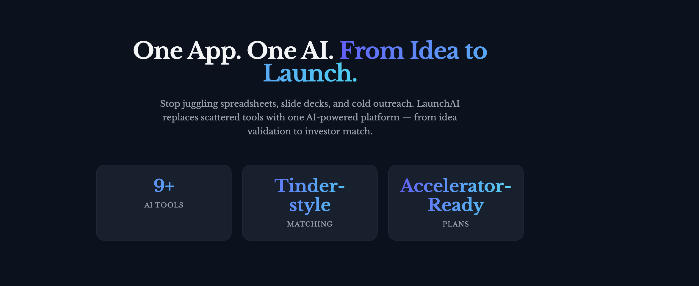
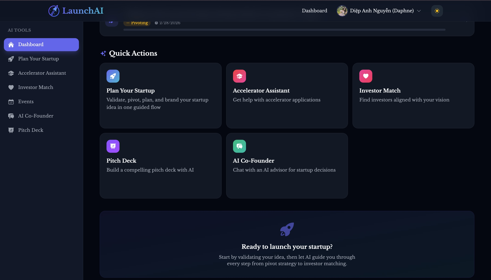
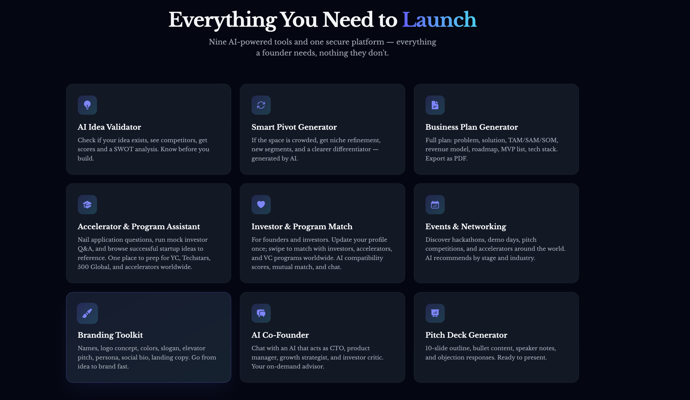
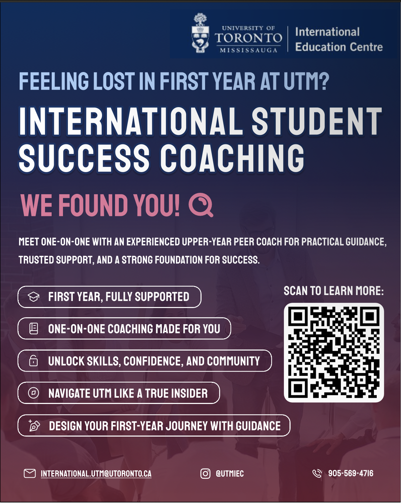
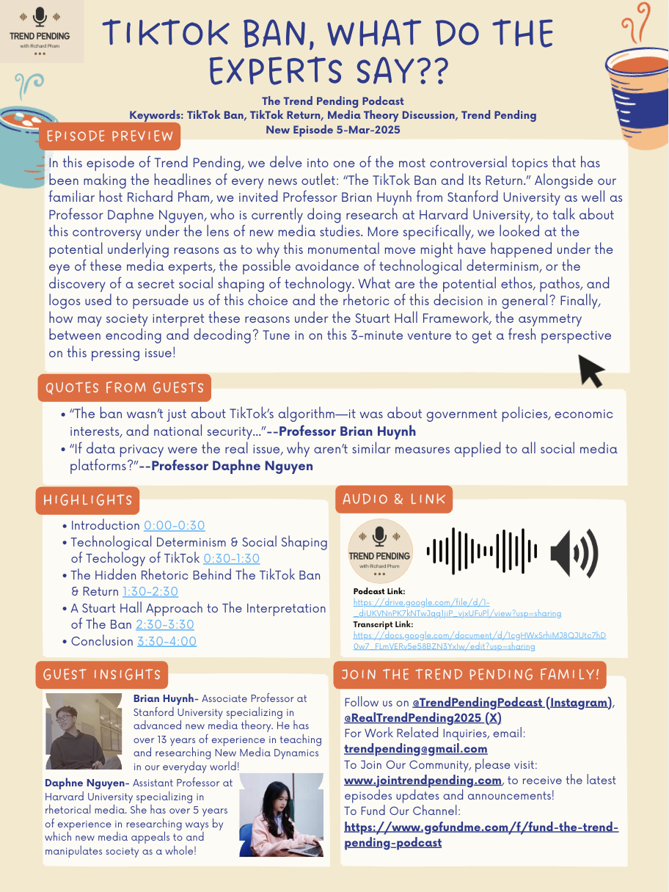
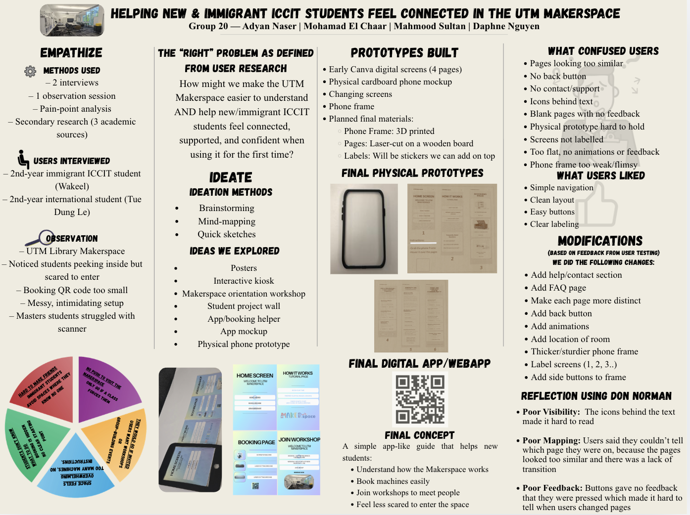

Portfolio
LaunchAI



LaunchAI Demo Video
Overview
LaunchAI is an AI-powered startup assistant that helps founders validate ideas, generate business plans, match with investors, and discover startup events nearby. Built in 36 hours at DeerHacks V with a team of 2.
Tech Stack
- React, TailwindCSS, Framer Motion (swipe animations), Auth0, REST API, Context API / state management
Key Frontend Features
- Tinder-inspired interaction, smooth swipe animations, real-time compatibility score, profile exploration UI
- Dynamic rendering of AI-generated results, clean visualization of startup scores, organized sections for analysis output
- Social login, role-based UI (Founder vs Investor), protected routes
- Clean list/grid view of startup events, filtered by location, action buttons for saving or learning more
Design Decisions
I focused on minimizing cognitive load by breaking AI outputs into structured sections instead of long text blocks, improving readability and making complex AI analysis actionable. The swipe interaction was chosen to reduce friction in networking and create an engaging experience rather than a traditional list-based interface.
Poster Designs
UTM IEC Promoting Poster

This promotional poster was designed for the International Student Success Coaching (ISSC) program under the International Education Centre (IEC) to support and engage international students as they navigate academic and campus life. Created using Figma, the design focuses on clarity, accessibility, and approachability, reflecting the program's goal of providing guidance, support, and community. The visual style balances clean layouts, clear information hierarchy, and student-friendly typography to ensure the message is easy to understand at a glance. Thoughtful use of spacing, color, and visual emphasis helps guide viewers through key program details while maintaining a welcoming and encouraging tone. Overall, the design aims to make the ISSC program feel approachable, supportive, and empowering for international students seeking success in a new academic environment.
The Trend Pending Podcast Episode Poster

This podcast episode poster promotes "TikTok Ban, What Do The Experts Say??" for The Trend Pending Podcast. The design features a clean, organized layout with hand-drawn style illustrations and a pastel color scheme. The poster effectively communicates episode highlights, guest insights, and engagement links while maintaining visual appeal and readability.
UTM Makerspace UX Research Project Poster

This UX research poster documents a design thinking project focused on helping new and immigrant ICCIT students feel connected in the UTM Makerspace. The poster showcases the complete design process from empathize to prototype, including user research findings, ideation methods, physical and digital prototypes, user testing feedback, and reflections based on Don Norman's design principles.